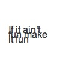

align()
Syntax
align(align=LEFT)
Description
Sets the alignment of text in a block. Text in a block wraps across multiple lines when
the width parameter of the text() command is specified. The
parameter for align() can be either LEFT, RIGHT, CENTER, JUSTIFY.
Returns
the current alignment
Example
fill(0.2) fontsize(16) align(RIGHT) quip = "If it ain't fun make it fun" text(quip, 10, 55, width=90) |
font()
Syntax
font(fontname, fontsize=None)
Description
Sets the current font. The first parameter is the valid name of a font installed on the
system. The valid name is the name as it appears in the Font Book application as
‘Postscript Name’. The second parameter is optional and specifies the font size, in the
same way as when calling the fontsize() command. All text() commands following the font() command will be drawn in this font.
Returns
the name of the current font
Example

|
fill(0.2) font("Helvetica", 35) text("hello", 10, 50) |
stylesheet()
text()
Syntax
text(txt, x, y, width=None, height=1000000, outline=False)
Description
Draws text to the screen. The first parameter sets the string of text to display
(’always between quotes’). The following two parameters set the location of the text’s
baseline. The fourth, fifth and sixth parameter are optional. The fourth parameter
specifies a width for text blocks, the fifth the maximum height. Text in a block is
wrapped across multiple lines. The alignment for text in a block can be set with the
align() command. By default, text is not outlined when saved as
a PDF. Optionally, a sixth parameter outline=True can be supplied so text will be
outlined.
Returns
Text being drawn
Tutorial
Example

|
fill(0.2) font("Helvetica", 20) text("hello", 10, 50) text("goodbye", 10, 70) |
Classes
Family
Font
Stylesheet
Text
Syntax
Text()
Description
The text() command in PlotDevice returns a Text object
representing the text being drawn. This object has a number of properties to
manipulate:
Properties
txt.x txt.y txt.text txt.metrics txt.path txt.copy()The metrics property is a tuple containing the width and height of the text block.
NodeBox Compatibility
Though their functionality has been subsumed by the commands listed above, the following NodeBox Typography commands may also be used in your scripts.
fontsize()
Syntax
fontsize(fontsize)
Description
Sets the current font size. All text() commands following the
fontsize() command will be drawn in this font size. Font size is measured in units of
points.
Returns
the current font size
Example

|
fill(0.2) font("Helvetica") fontsize(35) text("hello", 10, 50) |
lineheight()
Syntax
lineheight(height=None)
Description
Sets the line spacing of text in a block. Text in a block wraps across multiple lines
when the width parameter of the text() command is specified. The
default lineheight is 1.2 (120 percent of font size).
Returns
the current lineheight
Example
|  |
fill(0.2) fontsize(16) lineheight(0.4) quip = "If it ain't fun make it fun" text(quip, 10, 55, width=80) |
textheight()
Syntax
textheight(txt, width=None)
Description
Returns what would be the height of a text block drawn with the text() command, in the current font(), fontsize() and lineheight(). The first
parameter sets the text string to measure, the second parameter sets the width of a
line of text in block.
Returns
the height of the text block, as a floating point number
Example
font("Courier New") h = textheight("hello", 30) print h |
textmetrics()
Syntax
textmetrics(txt, width=None)
Description
Returns what would be the width and height of a text block drawn with the text() command, in the current font(), fontsize() and lineheight(). The first
parameter sets the text string to measure, the second parameter sets the width of a
line of text in block.
Returns
a tuple containing the width and height of the text block
Example
font("Courier New") w, h = textmetrics("hello", 30) print w print h |
textpath()
Syntax
textpath(txt, x, y, width=None, height=1000000)
Description
Works exactly like the text() command, except it returns a path
that can be used with bezier() or clip() instead of drawing text to the screen.
Returns
BezierPath containing the given text as outlines
Tutorial
Example
fontsize(65) path = textpath("clip", 10, 70) with clip(path): image("header.jpg", -300, -150) |
textwidth()
Syntax
textwidth(txt, width=None)
Description
Returns what would be the width of a text block drawn with the text() command, in the current font(), fontsize() and lineheight(). The
parameter sets the text string to measure.
Returns
the width of the text block, as a floating point number
Example
font("Courier New") w = textwidth("hello") print w |